캐릭터 기준 v1 확정 · 전용 시트 12개 생성·분리·검수 완료. 개별 이미지를 누르면 원본 비율로 확대됩니다.
4권의 얼굴·머리·둥근 안경·상대 키·화풍을 최우선 공통 기준으로 유지합니다. 원문 사실과 제작상 선택을 구분하고, 장면별 복장·소품 상태가 기본 시트보다 우선합니다.
| 1장 | 침실 잠옷 → 외출복. 손전등은 Annie의 벨트와 손 사이에서 이동. |
|---|---|
| 2~4장 | Jack의 배낭·성 책·노트·연필. Pennsylvania 책의 빨간 실크 책갈피와 성 책의 파란 가죽 책갈피 구분. |
| 5~6장 | 진열된 갑옷은 빈 물건. Jack은 무거운 투구만 잠시 착용. 경비가 벗긴 뒤 다시 쓰지 않음. Annie가 배낭을 확보. |
| 7장 | 손전등을 비추고 끈 뒤 배낭에 넣음. 아이들이 해자에 빠져 옷·신발·배낭이 젖음. Jack의 안경은 떨어지지만 손으로 잡아 다시 착용. |
| 8~9장 | 손전등은 작동하지 않음. 젖은 복장 유지. 기사와 말이 도와줌. 악어는 확인된 실물이 아니므로 그리지 않음. |
| 10장 | 귀가 뒤 Jack은 마른 잠옷. 젖은 성 책은 나무집에 돌려놓고, 파란 가죽 M 책갈피는 배낭에서 발견. 금색 M 메달은 침대 옆 서랍에 있었음. |
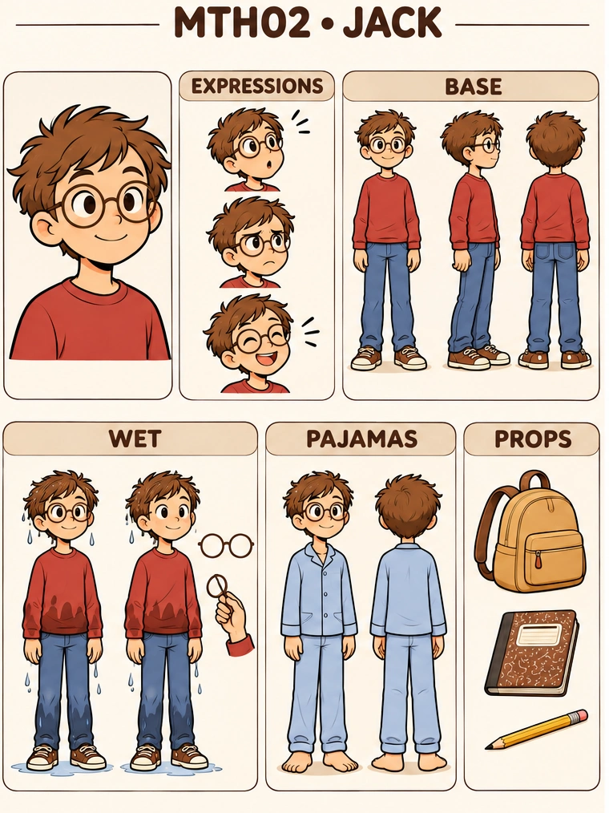
원문 사실: 8세 반. 안경. 외출 전에 청바지·따뜻한 스웨트셔츠·운동화로 갈아입는다.
확정 제작 선택: 4권과 동일한 갈색 머리·얼굴·얇은 원형 안경·상대 키. 스웨트셔츠는 빨강, 운동화는 갈색, 잠옷은 연파랑으로 선택.
연속성 규칙: 1장 침실 → 외출복 → 7장 끝~8장 해자에서 젖음 → 8~10장 귀가까지 젖은 옷 → 10장 마른 잠옷.
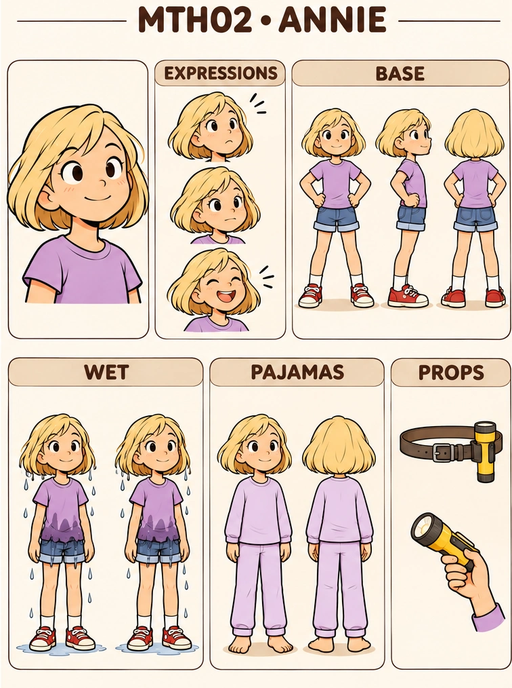
원문 사실: 7세. 손전등을 벨트에 걸거나 손에 든다. 해자에서 젖는다.
확정 제작 선택: 4권과 동일한 금발 단발·얼굴·작은 체형. 보라 티셔츠·청반바지·빨간 운동화. 잠옷의 연보라색은 제작 선택.
연속성 규칙: 손전등은 빛나는 마법 지팡이가 아닌 현대 손전등. 켜짐·꺼짐·약해짐·고장 시점을 따로 유지.
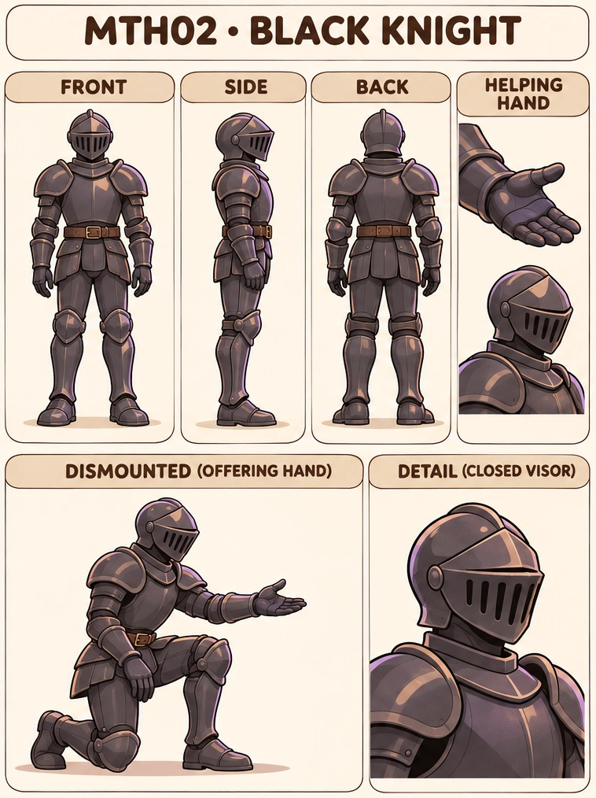
원문 사실: 말을 탄 기사. 갑옷과 장갑을 착용하고 닫힌 바이저가 얼굴을 가린다. 조용히 아이들을 돕는다.
확정 제작 선택: 단순한 짙은 차콜 갑옷과 부드러운 금속 하이라이트. 표식·왕관·정체를 추가하지 않는다.
연속성 규칙: 2장 책 속 그림과 실제 출현 구분. 9장 탑승 순서: 앞 Annie, 가운데 Jack, 뒤 기사. 10장 꿈은 회상 상태.
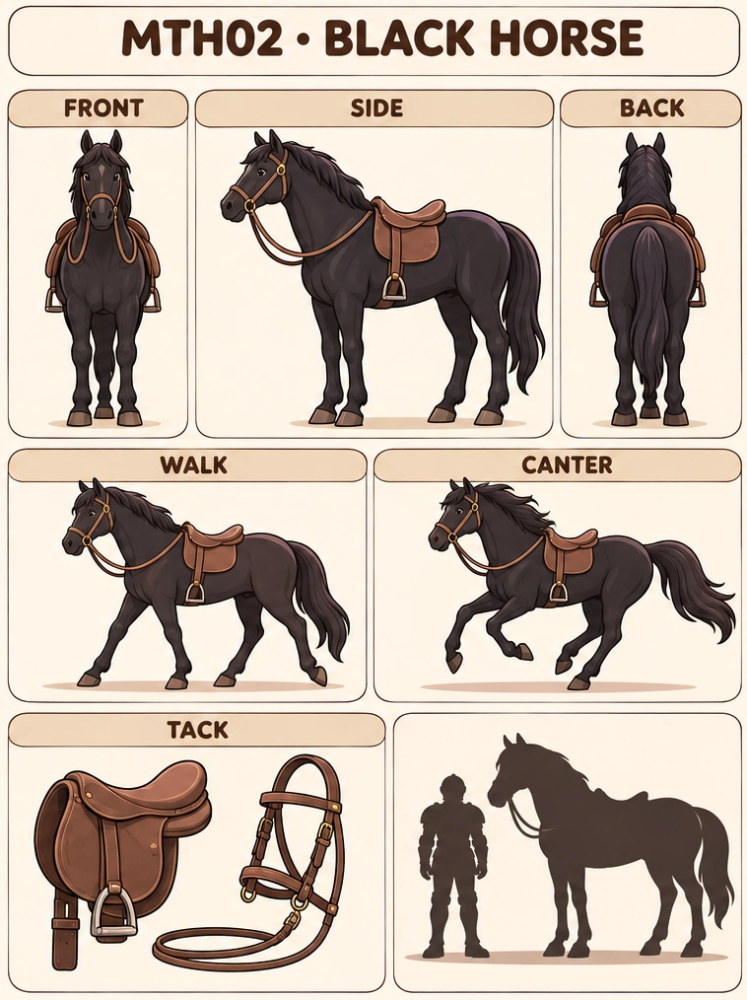
원문 사실: 기사의 검은 말. 아이들과 기사를 태우고 이동한다.
확정 제작 선택: 검은 갈기·꼬리, 갈색 가죽 안장·굴레·고삐의 세부 형태는 제작 선택.
연속성 규칙: 앞·뒤 인물 순서, 기사의 승하마, 정지와 구보 상태 유지. 말 울음만 들릴 때 실물을 자동 노출하지 않는다.
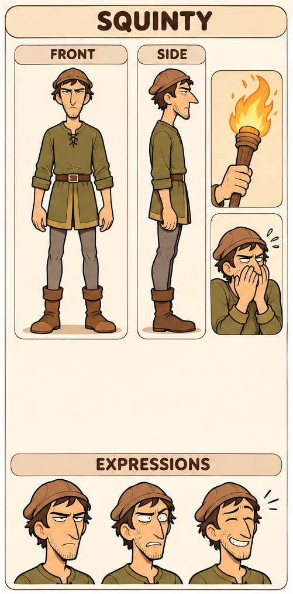
원문 사실: 세 경비 중 눈을 가늘게 뜬 남자. 횃불을 들며 손전등에 놀라 횃불을 떨어뜨린다.
확정 제작 선택: 올리브 튜닉·갈색 모자·수염은 제작 선택. 다른 경비와 얼굴을 바꾸지 않는다.
연속성 규칙: 6장 이동 순서 Squinty → Annie → Mustache → Jack → Red. 횃불은 물웅덩이에 떨어진 뒤 꺼짐.
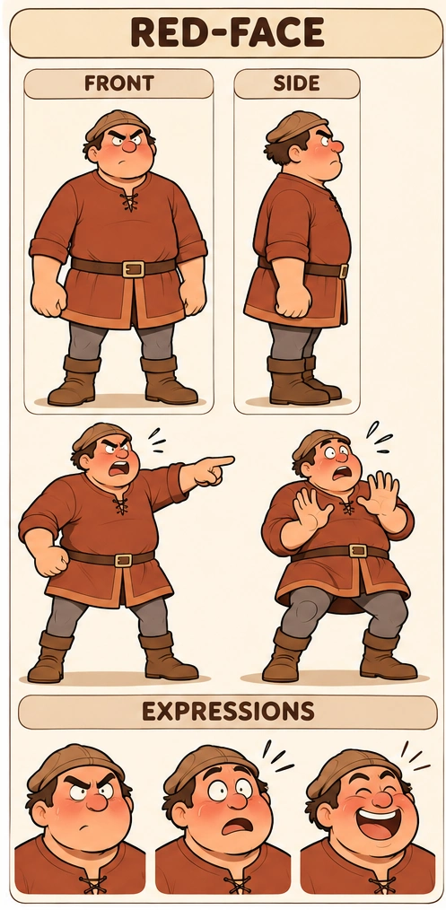
원문 사실: 세 경비 중 매우 붉은 얼굴의 남자. Jack을 붙잡고 체포를 명령한다.
확정 제작 선택: 둥근 체격·녹슨 빨강 튜닉·갈색 모자는 제작 선택.
연속성 규칙: 손전등에 놀라 물러나고 바닥에 눕는 상태. 기사로 바꾸지 않는다.
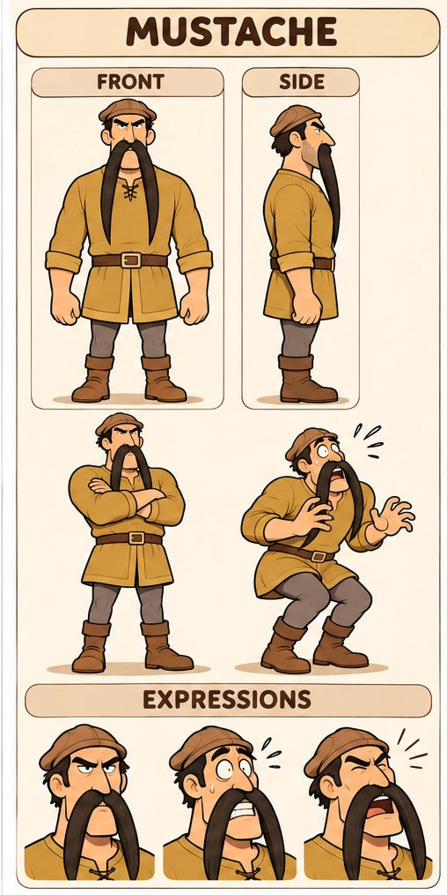
원문 사실: 세 경비 중 매우 긴 콧수염의 남자. Annie를 붙잡는다.
확정 제작 선택: 검은 긴 콧수염·겨자색 튜닉·갈색 모자는 제작 선택.
연속성 규칙: 다른 경비의 얼굴·복장을 교환하지 않는다. 원문 이상의 폭력 묘사를 추가하지 않는다.
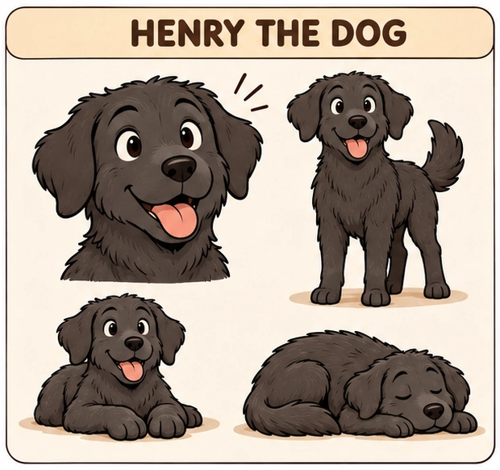
원문 사실: Frog Creek 이웃의 개. 짖는 소리가 들린다.
확정 제작 선택: 1권 시트의 검은 털·늘어진 귀·얼굴을 유지. 이 시트는 목걸이 없는 변형이다.
연속성 규칙: 소리만 있는 장면은 화면 밖으로 처리할 수 있다. 익룡 Henry와 다른 개체.
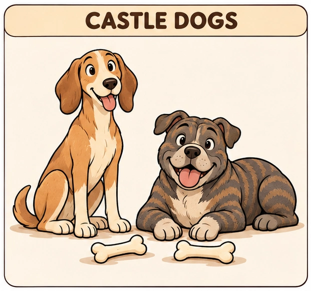
원문 사실: Great Hall 식탁 아래에서 뼈를 두고 다투는 개들.
확정 제작 선택: 황갈색 하운드와 회갈색 개를 역할 예시로 선택. 품종·정확한 개수는 원문 사실로 간주하지 않는다.
연속성 규칙: 성의 개들을 Henry와 혼동하지 않고 필요한 식탁 장면에만 표시.
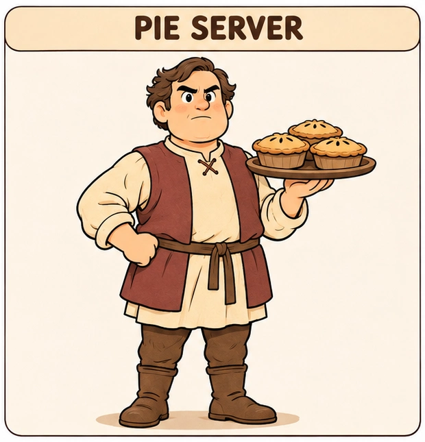
원문 사실: 파이 쟁반을 든 남자가 아이들에게 누구인지 묻는다.
확정 제작 선택: 갈색 머리·크림 튜닉·자주색 조끼는 제작 선택.
연속성 규칙: 기사·경비와 별도 인물. 쟁반은 하나.
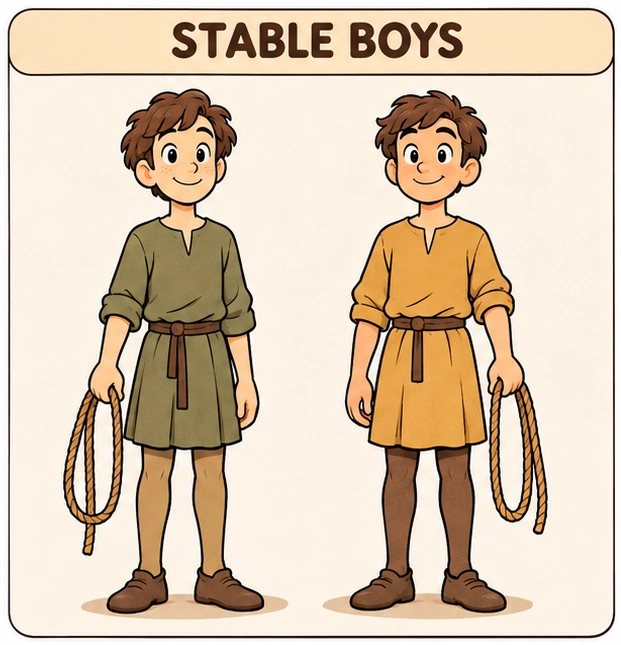
원문 사실: 안뜰에서 두 소년이 말들을 이끌고 마구간으로 간다.
확정 제작 선택: 초록·황토색 무릎 길이 튜닉과 갈색 머리·신발은 제작 선택.
연속성 규칙: 두 소년을 Jack·Annie나 잔치 시동과 혼동하지 않는다.
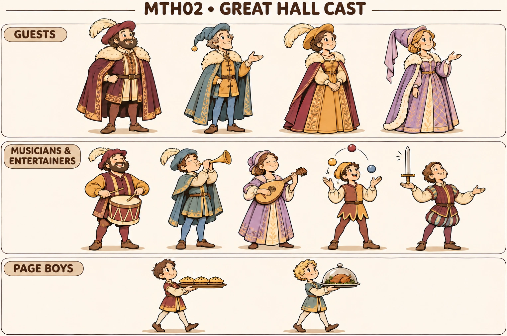
원문 사실: 망토·모피를 두른 손님, 음악가·저글러·검 균형 곡예사, 음식을 나르는 소년들.
확정 제작 선택: 개별 얼굴·모자·의상색은 군중 역할 예시. 특정 왕·여왕·Duke의 확정 초상으로 사용하지 않는다.
연속성 규칙: 잔치 대목의 실제 등장과 책 속 그림을 구분한다. 모든 역할을 모든 장면에 반복 삽입하지 않는다.
캐릭터 목록은 장면 출연 허가가 아닙니다. 실제 원문의 인물·행동·시점만 그립니다. 기사 얼굴과 정체는 드러내지 않습니다.